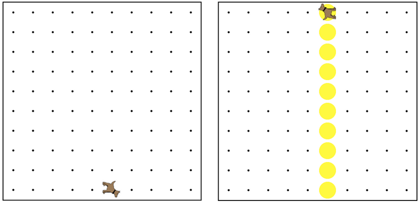

You need to make a tall tower (all the way to the top) of tennis balls in the column Karel is
standing in at the start. Karel could be in any column, and the world's height could be any size.
你需要讓網球在列卡雷爾的高塔（一路前）在開始站在。卡雷爾可以在任何列，和世界上的高度可以是任意大小。
Karel can start facing any direction, so you need to make sure to orient Karel to the North. Hint: use a while loop.
卡雷爾可以開始面對任何方向，所以你需要確保定向卡雷爾北。提示：使用而循環。

while (CONDITION) { 當 (條件) {
// Code that will run while the CONDITION is true.
// Once the CONDITION is no longer true,
// it will stop.
// 當該條件為正確時，將會執行的程式碼
// 一旦該條件不再正確時
// 此程式碼將會停止
}
/* This moves Karel to a wall */
/* 這使卡羅爾移向一面牆*/
while(frontIsClear()){ 當(前方無障礙物()){
move(); 移動();
}
frontIsClear()
前方無障礙物()
leftIsClear()
左方無障礙物()
rightIsClear()
右方無障礙物()
frontIsBlocked()
前方有障礙物()
leftIsBlocked()
左方有障礙物()
rightIsBlocked()
右方有障礙物()
facingNorth()
面向北方()
facingSouth()
面向南方()
facingEast()
面向東方()
facingWest()
面向西方()
notFacingNorth()
不面向北方()
notFacingSouth()
不面向南方()
notFacingEast()
不面向東方()
notFacingWest()
不面向西方()
ballsPresent()
有球()
noBallsPresent()
沒有球 ()